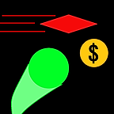

Diri - The Discord Bot
One of my bigger projects that I did is Diri. Diri is a Discord bot that can provide a fun pointer counter, space pictures from NASA, and Mars pictures from NASA. It can also relay queries to wolfram alpha to answer questions.
Diri uses web technologies, like Node.js, APIs, SQLite and more.
You can go see its website I made here:
Diri's WebsiteApp, I Guess - A peer-to-peer early warning system
App, I guess is a hybrid mobile app that I made after the school shootings were all over the news. I saw a problem, and I wanted to find a solution. I figured that a peer-to-peer warning sytem would work fastest and best. The app seems to be an innocent obvious Q&A app, but in the warning panel, you can send an alert to everyone else who has the app with location, and the type of the danger. It uses a backend to ferry data, send notifications, and keep a database of all events.
App I Guess uses web technologies. Hybrid app development with Cordova, Node.js backend with socket.io and betterSQLite3 for its functions. It sends notifications using GCM.
You can go see the web version here:
App, I GuessMy Portfolio - This website
This website, right now, is also an example of my coding(?) abilities. I made this site from scratch. I wrote every single character in the html of this website. Now, isn't that pretty cool eh?
You can go to the home page here:
Homepage
Unity Game - Dodge It!
Dodge It! is a 2D mobile game I am developing, with some of my friends providing creative input. The game is like a sharks and minnows game, where you try to get from one side of the screen to the other, without dying. The project is coming along and a demo is available online. Note though, the demo is usually not up to date.
Try out the demo here (Not current version):
Simmer.io DemoVex Robot - My team's Robot for the 2018-2019 season
I, with my team, made a Vex Robot for competition in the Vex Robotics competition. We got first place in the middle school division of the Montana State Championships. We also went to the World Championships! It was coded in Vex C++ which is a variant of C++ made for coding our robot.
You can go to their website here:
Vex Robotics Website
Multiplayer Capture the Flag - Simple Scratch Mockup
This project is one I did for fun a little while a go on Scratch. I wanted to see if I could make a live multiplayer game so I made one! It is pretty laggy and sometimes glitchy but that is because of Scratch's limitations. I think it's pretty cool.
You can go see its scratch site here:
Scratch Project